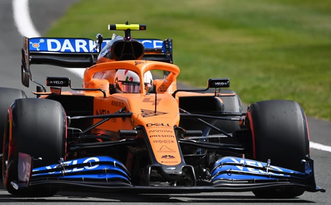

Todo sobre Lando Norris - Piloto de F1


Nacionalidad: Gran Bretaña
Numero: 4
Equipo: McLaren
Compañero: Daniel Ricciardo (2021) - Carlos sainz (2019-2020)
Primer debut: 2019 Grand Prix de Australia
Grand prix disputados: 53
Titulos ganados: Ninguno
Victorias: Ninguna
Poles: 1
Podios: 5
Vueltas rapidas: 2
Puntos a lo largo de su carrera: 285
- 